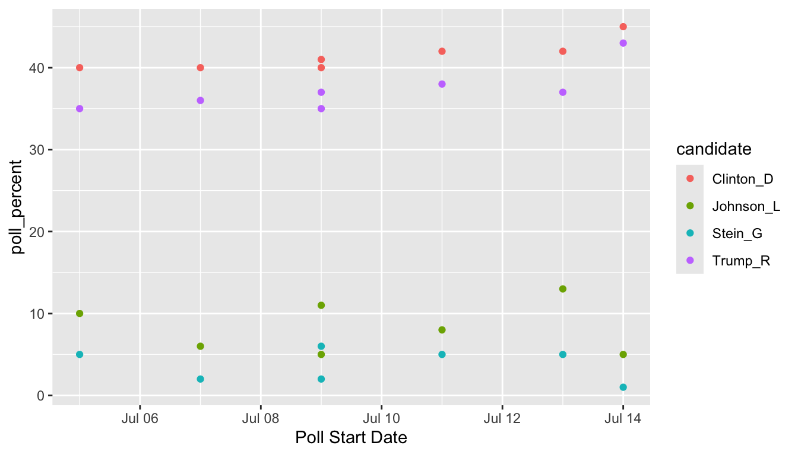

6 Tidying with tidyr
Goals:
describe what it means for a data set to be tidy.
use
separate()andunite()to transform a data set into tidy form.use
pivot_longer()andpivot_wider()to transform a data set into tidy form.combine
tidyrfunctions withdplyrandggplot2functions to form a more complete workflow.
The Data: We will first use a polling data set that contains variables collected from a few different polls in July 2016 for the U.S. presidential election. The data set was scraped from RealClear politics https://www.realclearpolitics.com/epolls/latest_polls/president/ by Dr. Ramler. The variables are:
-
Poll, the name of the poll -
Date, the date range that the poll was conducted -
Sample, contains the sample size of the poll and whether the poll was of Likely Voters or Registered Voters -
MoE, the margin of error of the poll (recall this term from IntroStat) -
Clinton (D), the percentage of people in the poll voting for Clinton -
Trump (R), the percentage of people in the poll voting for Trump -
Johnson (L), the percentage of people in the poll voting for Johnson -
Steing (G), the percentage of people in the poll voting for Stein
6.1 What is Tidy Data?
R usually (but not always) works best when your data is in tidy form. A tidy data set has a few characteristics.
You should already be quite familiar with tidy data because, up to this point, all of the data sets we have used in this class (and probably most of the data sets that you see in STAT 113 an all of the data sets that you may have seen in STAT 213) are tidy.
The definition of tidy data below is taken from R for Data Science:
- every variable in the data set is stored in its own column
- every case in the data set is stored in its own row
- each value of a variable is stored in one cell
- values in the data set should not contain units
- there should not be any table headers or footnotes
We will begin by focusing on the first characteristic: every variable in a the data set should be stored in its own column (and correspondingly, number 3: each value of a variable should be stored in one cell).
6.2 separate() and unite() Columns
In a fresh .qmd file (File -> New File -> Quarto) that is in your Notes project, copy and paste the following code into an R chunk:
library(tidyverse)
library(here)
polls <- read_csv(here("data/rcp-polls.csv"), na = "--")
polls
#> # A tibble: 7 × 8
#> Poll Date Sample MoE Clint…¹ Trump…² Johns…³ Stein…⁴
#> <chr> <chr> <chr> <dbl> <dbl> <dbl> <dbl> <dbl>
#> 1 Monmouth 7/14 -… 688 LV 3.7 45 43 5 1
#> 2 CNN/ORC 7/13 -… 872 RV 3.5 42 37 13 5
#> 3 ABC News/Wash Post 7/11 -… 816 RV 4 42 38 8 5
#> 4 NBC News/Wall St. Jrnl 7/9 - … 1000 … 3.1 41 35 11 6
#> 5 Economist/YouGov 7/9 - … 932 RV 4.5 40 37 5 2
#> 6 Associated Press-GfK 7/7 - … 837 RV NA 40 36 6 2
#> # … with 1 more row, and abbreviated variable names ¹`Clinton (D)`,
#> # ²`Trump (R)`, ³`Johnson (L)`, ⁴`Stein (G)`Suppose that you wanted to know what the average sample size of the polls was. Using dplyr functions,
What warning do you get? Why?
You would get a similar warning (or sometimes an error) any time that you want to try to use Sample size in plotting or summaries. The issue is that the Sample column actually contains two variables so the data set is not tidy.
6.2.1 separate() a Column
Let’s separate() the Sample column into Sample_size and Sample_type:
polls |>
separate(col = Sample, into = c("Sample_size", "Sample_type"),
sep = " ")
#> # A tibble: 7 × 9
#> Poll Date Sampl…¹ Sampl…² MoE Clint…³ Trump…⁴ Johns…⁵ Stein…⁶
#> <chr> <chr> <chr> <chr> <dbl> <dbl> <dbl> <dbl> <dbl>
#> 1 Monmouth 7/14… 688 LV 3.7 45 43 5 1
#> 2 CNN/ORC 7/13… 872 RV 3.5 42 37 13 5
#> 3 ABC News/Wash … 7/11… 816 RV 4 42 38 8 5
#> 4 NBC News/Wall … 7/9 … 1000 RV 3.1 41 35 11 6
#> 5 Economist/YouG… 7/9 … 932 RV 4.5 40 37 5 2
#> 6 Associated Pre… 7/7 … 837 RV NA 40 36 6 2
#> # … with 1 more row, and abbreviated variable names ¹Sample_size,
#> # ²Sample_type, ³`Clinton (D)`, ⁴`Trump (R)`, ⁵`Johnson (L)`, ⁶`Stein (G)`The arguments to separate() are fairly easy to learn:
colis the name of the column in the data set you want to separate.intois the name of the new columns. These could be anything you want, and are entered in as a vector (withc()to separate the names)sepis the character that you want to separate the column by. In this case, the sample size and sample type were separated by whitespace, so oursep = " ", white space.
The sep argument is the newest piece of information here.
Note that even using sep = "" will produce an error (there is not a space now, so R doesn’t know what to separate by):
Similarly, we would like the Date column to be separated into a poll start date and a poll end date:
6.2.2 unite() Columns
unite() is the “opposite” of separate(): use it when one variable is stored across multiple columns, but each row still represents a single case. The need to use unite() is less common than separate(). In our current data set, there is no need to use it at all. But, for the sake of seeing an example, let’s separate the Start date into month and day and then use unite() to re-unite those columns:
polls_sillytest <- polls_sep |>
separate(col = Start, into = c("Start_month", "Start_day"),
sep = "/")
polls_sillytest
#> # A tibble: 7 × 10
#> Poll Start…¹ Start…² End Sample MoE Clint…³ Trump…⁴ Johns…⁵ Stein…⁶
#> <chr> <chr> <chr> <chr> <chr> <dbl> <dbl> <dbl> <dbl> <dbl>
#> 1 Monmouth 7 14 7/16 688 LV 3.7 45 43 5 1
#> 2 CNN/ORC 7 13 7/16 872 RV 3.5 42 37 13 5
#> 3 ABC New… 7 11 7/14 816 RV 4 42 38 8 5
#> 4 NBC New… 7 9 7/13 1000 … 3.1 41 35 11 6
#> 5 Economi… 7 9 7/11 932 RV 4.5 40 37 5 2
#> 6 Associa… 7 7 7/11 837 RV NA 40 36 6 2
#> # … with 1 more row, and abbreviated variable names ¹Start_month,
#> # ²Start_day, ³`Clinton (D)`, ⁴`Trump (R)`, ⁵`Johnson (L)`, ⁶`Stein (G)`This situation could occur in practice: for example, the date variable may be in multiple columns, one for month and one for day (and if there are multiple years, there could be a third for year). We would use unite() to combine these two columns into a single Date, called New_start_date:
polls_sillytest |>
unite("New_start_date", c(Start_month, Start_day),
sep = "/")
#> # A tibble: 7 × 9
#> Poll New_s…¹ End Sample MoE Clint…² Trump…³ Johns…⁴ Stein…⁵
#> <chr> <chr> <chr> <chr> <dbl> <dbl> <dbl> <dbl> <dbl>
#> 1 Monmouth 7/14 7/16 688 LV 3.7 45 43 5 1
#> 2 CNN/ORC 7/13 7/16 872 RV 3.5 42 37 13 5
#> 3 ABC News/Wash P… 7/11 7/14 816 RV 4 42 38 8 5
#> 4 NBC News/Wall S… 7/9 7/13 1000 … 3.1 41 35 11 6
#> 5 Economist/YouGov 7/9 7/11 932 RV 4.5 40 37 5 2
#> 6 Associated Pres… 7/7 7/11 837 RV NA 40 36 6 2
#> # … with 1 more row, and abbreviated variable names ¹New_start_date,
#> # ²`Clinton (D)`, ³`Trump (R)`, ⁴`Johnson (L)`, ⁵`Stein (G)`unite() just switches around the first two arguments of separate(). Argument 1 is now the name of the new column and Argument 2 is the names of columns in the data set that you want to combine.
We have also used the c() function in separate() and unite(). While c() is a very general R function and isn’t specific to tidy data, this is the first time that we’re seeing it in this course. c() officially stands for concatenate, but, in simpler terms, c() combines two or more “things”, separated by a comma.
This is useful if a function argument expects two or more “things”: for example, in separate(), the into argument requires two column names for this example. Those column names must be specified by combining the names together with c().
6.2.3 Column Names and rename()
You might have noticed that the columns with percentage of votes for Clinton, Trump, etc. are surrounded by backticks ` ` when you print polls or polls_sep:
polls_sep
#> # A tibble: 7 × 9
#> Poll Start End Sample MoE Clint…¹ Trump…² Johns…³ Stein…⁴
#> <chr> <chr> <chr> <chr> <dbl> <dbl> <dbl> <dbl> <dbl>
#> 1 Monmouth 7/14 7/16 688 LV 3.7 45 43 5 1
#> 2 CNN/ORC 7/13 7/16 872 RV 3.5 42 37 13 5
#> 3 ABC News/Wash Post 7/11 7/14 816 RV 4 42 38 8 5
#> 4 NBC News/Wall St.… 7/9 7/13 1000 … 3.1 41 35 11 6
#> 5 Economist/YouGov 7/9 7/11 932 RV 4.5 40 37 5 2
#> 6 Associated Press-… 7/7 7/11 837 RV NA 40 36 6 2
#> # … with 1 more row, and abbreviated variable names ¹`Clinton (D)`,
#> # ²`Trump (R)`, ³`Johnson (L)`, ⁴`Stein (G)`This happens because the column names have a space in them (this also would occur if the columns started with a number or had odd special characters in them). Then, any time you want to reference a variable, you need the include the backticks:
Having variable names with spaces doesn’t technically violate any principle of tidy data, but it can be quite annoying. Always using backticks can be a huge pain. We can rename variables easily with rename(), which just takes a series of new_name = old_name arguments.
polls_new <- polls_sep |>
rename(Clinton_D = `Clinton (D)`, Trump_R = `Trump (R)`,
Johnson_L = `Johnson (L)`, Stein_G = `Stein (G)`)
polls_new
#> # A tibble: 7 × 9
#> Poll Start End Sample MoE Clint…¹ Trump_R Johns…² Stein_G
#> <chr> <chr> <chr> <chr> <dbl> <dbl> <dbl> <dbl> <dbl>
#> 1 Monmouth 7/14 7/16 688 LV 3.7 45 43 5 1
#> 2 CNN/ORC 7/13 7/16 872 RV 3.5 42 37 13 5
#> 3 ABC News/Wash Post 7/11 7/14 816 RV 4 42 38 8 5
#> 4 NBC News/Wall St.… 7/9 7/13 1000 … 3.1 41 35 11 6
#> 5 Economist/YouGov 7/9 7/11 932 RV 4.5 40 37 5 2
#> 6 Associated Press-… 7/7 7/11 837 RV NA 40 36 6 2
#> # … with 1 more row, and abbreviated variable names ¹Clinton_D, ²Johnson_Lrename() can also be very useful if you have variable names that are very long to type out.
rename() is actually from dplyr, not tidyr, but we did not have a need for it with any of the dplyr data sets.
In the following exercises, use the toy data set to practice with separate() and unite().
toy_df <- tibble::tibble(show = c("Bojack Horseman: Netflix",
"VEEP: HBO",
"American Vandal: Netflix",
"Community: Peacock"),
seasons = c("1-6", "1-7", "1-2", "1-6"),
main_first = c("Bojack", "Selina", "Peter", "Jeff"),
main_last = c("Horseman", "Meyer", "Molganado", "Winger"))
toy_df
#> # A tibble: 4 × 4
#> show seasons main_first main_last
#> <chr> <chr> <chr> <chr>
#> 1 Bojack Horseman: Netflix 1-6 Bojack Horseman
#> 2 VEEP: HBO 1-7 Selina Meyer
#> 3 American Vandal: Netflix 1-2 Peter Molganado
#> 4 Community: Peacock 1-6 Jeff WingerExercise 1. separate() the show variable into a column that has the TV show name and a column that has the name of the network.
Exercise 2. separate() the seasons variable into a column that has the starting season and a column that has the ending season.
Exercise 3. unite() the main_first and main_last columns into a new column that gives the full name of the main character, with their first and last names separated by a single space.
6.3 Reshaping with pivot_()
We will continue to use the polling data set to introduce the pivoting functions and data reshaping. To make sure that we are all working with the same data set, run the following line of code:
polls_clean <- polls |>
separate(col = Sample, into = c("Sample_size", "Sample_type"),
sep = " ") |>
separate(col = Date, into = c("Start", "End"),
sep = " - ") |>
rename(Clinton_D = `Clinton (D)`, Trump_R = `Trump (R)`,
Johnson_L = `Johnson (L)`, Stein_G = `Stein (G)`)
polls_clean
#> # A tibble: 7 × 10
#> Poll Start End Sampl…¹ Sampl…² MoE Clint…³ Trump_R Johns…⁴ Stein_G
#> <chr> <chr> <chr> <chr> <chr> <dbl> <dbl> <dbl> <dbl> <dbl>
#> 1 Monmouth 7/14 7/16 688 LV 3.7 45 43 5 1
#> 2 CNN/ORC 7/13 7/16 872 RV 3.5 42 37 13 5
#> 3 ABC News… 7/11 7/14 816 RV 4 42 38 8 5
#> 4 NBC News… 7/9 7/13 1000 RV 3.1 41 35 11 6
#> 5 Economis… 7/9 7/11 932 RV 4.5 40 37 5 2
#> 6 Associat… 7/7 7/11 837 RV NA 40 36 6 2
#> # … with 1 more row, and abbreviated variable names ¹Sample_size,
#> # ²Sample_type, ³Clinton_D, ⁴Johnson_LThe data set polls_clean still isn’t tidy!! The candidate variable is spread out over 4 different columns and the values in each of these 4 columns actually represent 1 variable: poll percentage.
Thinking about data “tidyness” using the definitions above can sometimes be a little bit confusing. In practice, oftentimes we will usually realize that a data set is untidy when we go to do something that should be super simple but that something turns out to not be super simple at all when the data is in its current form.
For example, one thing we might want to do is to make a plot that has poll Start time on the x-axis, polling numbers on the y-axis, and has candidates represented by different colours. For this small data set, we might not see any trends through time, but you could imagine this graph would be quite useful if we had polling numbers through June, July, August, September, etc.
Take a moment to think about how you would make this graph in ggplot2: what is your x-axis variable? What variable are you specifying for the y-axis? For the colours?
A first attempt in making a graph would be:
ggplot(data = polls_clean, aes(x = Start, y = Clinton_D)) +
geom_point(aes(colour = ....??????????))And we’re stuck. It’s certainly not impossible to make the graph with the data in its current form (keep adding geom_point() and re-specifying the aesthetics, then manually specify colours, then manually specify a legend), but it’s definitely a huge pain.
This is where pivot_longer() can help! https://www.youtube.com/watch?v=8w3wmQAMoxQ
6.3.1 pivot_longer() to Gather Columns
pivot_longer() “pivots” the data set so that is has more rows (hence the “longer”) by collapsing multiple columns into two columns. One new column is a “key” column, which is the new variable containing the old data set’s column names. The second new column is a “value” column, which is the new variable containing the old data set’s values for each of the old data set’s column names. It’s easier to see this with an example. We know from our plotting exercise above that we’d really like a candidate variable to colour by and a poll_percent variable for the y-axis of our plot. So, we can use pivot_longer() to make these two columns:
polls_clean |>
pivot_longer(cols = c(Clinton_D, Trump_R, Johnson_L, Stein_G),
names_to = "candidate", values_to = "poll_percent")
#> # A tibble: 28 × 8
#> Poll Start End Sample_size Sample_type MoE candidate poll_percent
#> <chr> <chr> <chr> <chr> <chr> <dbl> <chr> <dbl>
#> 1 Monmouth 7/14 7/16 688 LV 3.7 Clinton_D 45
#> 2 Monmouth 7/14 7/16 688 LV 3.7 Trump_R 43
#> 3 Monmouth 7/14 7/16 688 LV 3.7 Johnson_L 5
#> 4 Monmouth 7/14 7/16 688 LV 3.7 Stein_G 1
#> 5 CNN/ORC 7/13 7/16 872 RV 3.5 Clinton_D 42
#> 6 CNN/ORC 7/13 7/16 872 RV 3.5 Trump_R 37
#> # … with 22 more rowspivot_longer() has three important arguments:
-
cols, the names of the columns that you want to PIVOT! -
names_to, the name of the new variable that will have the old column names (anything you want it to be!) -
values_to, the name of the new variable that will have the old column values (anything you want it to be!)
Now we can make our plot using ggplot functions. But don’t forget to give a name to our new “long” data set first!
polls_long <- polls_clean |>
pivot_longer(cols = c(Clinton_D, Trump_R, Johnson_L, Stein_G),
names_to = "candidate", values_to = "poll_percent")
## ignore as.Date for now....we will get to dates later!
ggplot(data = polls_long,
aes(x = as.Date(Start, "%m/%d"), y = poll_percent,
colour = candidate)) +
geom_point() + labs(x = "Poll Start Date")
6.3.2 pivot_wider() to Spread to Multiple Columns
The “opposite” of pivot_longer() is pivot_wider(). We need to use pivot_wider() when one case is actually spread across multiple rows. pivot_wider() has two main arguments:
-
names_from, the column in the old data set that will provide the names of the new columns and -
values_from, the column in the old data set that will provide the values that fill in the new columns
One common use case of pivot_wider() is the creation of a contingency table from summarised data. For example, suppose that, from the STAT 113 survey data, we have
stat113_df <- read_csv(here::here("data/stat113.csv"))
stat113_sum <- stat113_df |> filter(!is.na(Sex)) |> group_by(Year, Sex) |>
summarise(n_students = n())
stat113_sum
#> # A tibble: 8 × 3
#> # Groups: Year [4]
#> Year Sex n_students
#> <chr> <chr> <int>
#> 1 FirstYear F 90
#> 2 FirstYear M 84
#> 3 Junior F 15
#> 4 Junior M 18
#> 5 Senior F 3
#> 6 Senior M 10
#> # … with 2 more rowsWe want to make a two-way (contingency) table of the number of students that has Sex on the rows and Year on the columns. pivot_wider() can put the levels of the Year variable as new columns in the data frame:
stat113_sum |> pivot_wider(names_from = Year, values_from = n_students)
#> # A tibble: 2 × 5
#> Sex FirstYear Junior Senior Sophomore
#> <chr> <int> <int> <int> <int>
#> 1 F 90 15 3 100
#> 2 M 84 18 10 76We will see more examples of pivot_wider() and pivot_longer() in the Exercises.
Tidy data isn’t necessarily always better: you might find cases where you need to “untidy” the data by using pivot_longer() or pivot_wider(). However, most functions in R (and in other languages) work best with tidy data.
There are a few more topics to discuss in tidying data. We have not yet discussed the 4th or 5th characteristics of tidy data (cells should not contain units and there should be no headers or footers), but these are usually dealt with when we read in the data. Therefore, these issues will be covered when we discuss readr.
Exercise 4. With the stat113_df data, construct a table showing the average GPA (without missing GPA values) for each Sex-Sport combination. Then, pivot the table so that the columns are the levels of Sport and the rows are the levels of Sex.
To create the (unpivoted) table, you will need to use group_by() and summarise(), adding in an na.rm = TRUE argument to summarise().
Exercise 5. Suppose that you have the following data set that has the number of deaths from a disease for various years in different locations.
Pivot the data set so that there is a single column that gives the year and a single column that gives the death count.
6.4 Practice
6.4.1 Class Exercises
Class Exercise 1. Once you have a handle on data science terminology, it’s not too difficult to transfer what you’ve learned to a different language. For example, students in computer science might be more familiar with Python. Google something like “pivot from wide to long in python” to find help on achieving the equivalent of pivot_longer() in Python.
Class Exercise 2. The UBSprices2 data set contains information on prices of common commodities in cities throughout the world in the years 2003 and 2009. The three commodities in the data set are Rice (1 kg worth), Bread (1 kg worth), and a Big Mac https://media1.giphy.com/media/Fw5LicDKem6nC/source.gif
{kind=link}
Convert the data set to a tidier form so that there is a year variable and a commodity variable that has 3 values: "bigmac", "bread", and "rice". Hint: At some point, you will need to separate the commodity from the year in, for example, bread2009. But, you’ll notice this is different than our other uses of separate() because there is no “-” or ” ” or “/” to use as a separating character. Look at the help for separate() and scroll down to the sep argument to see if you can figure out this issue. The first code chunk below shows the solution for this particular issue in case you only get stuck on this part while the second code chunk shows the entire solution.
Class Exercise 3. Convert your data set from the previous exercise so that commodity is split up into 3 variables: bigmac price, rice price and bread price.
Class Exercise 4. In which data set would it be easiest to make a line plot with year on the x-axis and price of rice on the y-axis with lines for each city? In which data set would it be easiest to make a line chart with 3 lines, one for each type of commodity, for the city of Amsterdam?
New Data:
The under5mortality.csv file contains data on mortality for people under the age of 5 in countries around the world (mortality in deaths per 1000 people). The data come from https://www.gapminder.org/data/. The data set is extremely wide in its current form, having a column for each year in the data set. Read in the data set with
mortality_df <- read_csv(here("data/under5mortality.csv"))
head(mortality_df)
#> # A tibble: 6 × 217
#> Under five…¹ `1800` `1801` `1802` `1803` `1804` `1805` `1806` `1807` `1808`
#> <chr> <dbl> <dbl> <dbl> <dbl> <dbl> <dbl> <dbl> <dbl> <dbl>
#> 1 Abkhazia NA NA NA NA NA NA NA NA NA
#> 2 Afghanistan 469. 469. 469. 469. 469. 469. 470. 470. 470.
#> 3 Akrotiri an… NA NA NA NA NA NA NA NA NA
#> 4 Albania 375. 375. 375. 375. 375. 375. 375. 375. 375.
#> 5 Algeria 460. 460. 460. 460. 460. 460. 460. 460. 460.
#> 6 American Sa… NA NA NA NA NA NA NA NA NA
#> # … with 207 more variables: `1809` <dbl>, `1810` <dbl>, `1811` <dbl>,
#> # `1812` <dbl>, `1813` <dbl>, `1814` <dbl>, `1815` <dbl>, `1816` <dbl>,
#> # `1817` <dbl>, `1818` <dbl>, `1819` <dbl>, `1820` <dbl>, `1821` <dbl>,
#> # `1822` <dbl>, `1823` <dbl>, `1824` <dbl>, `1825` <dbl>, `1826` <dbl>,
#> # `1827` <dbl>, `1828` <dbl>, `1829` <dbl>, `1830` <dbl>, `1831` <dbl>,
#> # `1832` <dbl>, `1833` <dbl>, `1834` <dbl>, `1835` <dbl>, `1836` <dbl>,
#> # `1837` <dbl>, `1838` <dbl>, `1839` <dbl>, `1840` <dbl>, `1841` <dbl>, …Class Exercise 5. Notice that there are 217 columns (at the top of the print out of the header, 217 is the second number). When we use tidyr, we aren’t going to want to type out c(2, 3, 4, 5, .....) all the way up to 217! R has short-hand notation that we can use with :. For example, type in 4:9 in your console window. Use this notation to tidy the mortality_df data set.
You’ll need to add something to your pivot_longer() function to convert the variable Year to numeric. We haven’t talked too much about variable types yet so, after your values_to = "Mortality" statement, add , names_transform = list(Year = as.numeric), making sure you have a second ) to close the pivot_longer() function.
Class Exercise 6. Make a line plot to look at the overall under 5 mortality trends for each country.
Class Exercise 7. What is the overall trend in under 5 mortality? Does every single country follow this trend? What looks strange about the plot, specifically about the data collected before 1900?
6.4.2 Your Turn
The MLB salary data set contains salaries on all 862 players in Major League Baseball in 2016. The data set was obtained from http://www.usatoday.com/sports/mlb/salaries/2016/player/all/
Your Turn 1. Read in the data using the following code chunk and, with your group, write a sentence or two that explains why the data set is not tidy.
library(tidyverse)
library(here)
baseball_df <- read_csv(here("data/mlb2016.csv"))
head(baseball_df)
#> # A tibble: 6 × 7
#> Name Team POS Salary Years Total.Value Avg.A…¹
#> <chr> <chr> <chr> <chr> <chr> <chr> <chr>
#> 1 Clayton Kershaw LAD SP $ 33,000,000 7 (2014-20) $ 215,000,0… $ 30,7…
#> 2 Zack Greinke ARI SP $ 31,799,030 6 (2016-21) $ 206,500,0… $ 34,4…
#> 3 David Price BOS SP $ 30,000,000 7 (2016-22) $ 217,000,0… $ 31,0…
#> 4 Miguel Cabrera DET 1B $ 28,000,000 10 (2014-23) $ 292,000,0… $ 29,2…
#> 5 Justin Verlander DET SP $ 28,000,000 7 (2013-19) $ 180,000,0… $ 25,7…
#> 6 Yoenis Cespedes NYM CF $ 27,328,046 3 (2016-18) $ 75,000,000 $ 25,0…
#> # … with abbreviated variable name ¹Avg.AnnualYour Turn 2. Tidy the data set just so that
-
Durationof the salary contract (currently given in theYearcolumn) is in its own column - the year range (also currently given in the
Yearcolumn) is split into a variable calledStartand a variable calledEndyear that give the start and end years of the contract. You can still have special characters for now (like(and)) in the start and end year.
Your Turn 3. You should have received a warning message. What does this message mean? See if you can figure it out by typing View(baseball_df) in your console window and scrolling down to some of the rows that the warning mentions: 48, 59, 60, etc. Discuss with your group why that warning message was given.
Your Turn 4. We won’t learn about parse_number() until readr, but the function is straightforward enough to mention here. It’s useful when you have extra characters in the values of a numeric variable (like a $ or a (), but you just want to grab the actual number:
baseball_df <- baseball_df |>
mutate(Salary = parse_number(Salary),
Total.Value = parse_number(Total.Value),
Avg.Annual = parse_number(Avg.Annual),
Start = parse_number(Start),
End = parse_number(End))Run the code above so that the parsing is saved to baseball_df.
Your Turn 5. With a partner, brainstorm 2 different graphics you could construct to investigate how player Salary compares for players with different POS. Each of you should make 1 of the graphics you discussed. Then, state the reason why making that plot would not have worked before we tidied the data set.
New Data: For the rest of the exercises, we will use salary data from the National Football League obtained from FiveThirtyEight that were originally obtained from Spotrac.com.
The data set has the top 100 paid players for each year for each position from 2011 through 2018, broken down by player position. For those unfamiliar with American football, the positions in the data set are Quarterback, Running Back, Wide Receiver, Tight End, and Offensive Lineman for offense, Cornerback, Defensive Lineman, Linebacker, and Safety for Defense, and a separate category for Special Teams players that includes punters and kickers. You can review a summary of player positions here.
We are interested in how salaries compare for the top 100 players in each position and on how salaries have changed through time for each position.
Read in the data set with
Your Turn 6. Use the head() functions to look at the data, and then, with your group, explain why this data set is not in tidy form.
Your Turn 7. Use a function in tidyr to make the data tidy, and give your tidy data set a new name.
The following exercises are a bit more challenging. Even though they are “Your Turn” exercises, we will discuss them a bit as a class as well.
Your Turn 8. To your data set in the previous exercise, add a ranking variable that ranks the salaries within each player position so that the highest paid players in each year-position combination all receive a 1, the second highest paid players receive a 2, etc. Compare your results for the default way that R uses to break ties between two salaries that are the same and using ties.method = "first".
Your Turn 9. Find the maximum salary for each player position in each year. Then, create two different line graphs that shows how the maximum salary has changed from 2011 to 2018 for each position. For one line graph, make the colours of the lines different for each position. For the second line graph, facet by position. Which graph do you like better?
Your Turn 10. The maximum salary is very dependent on one specific player. Make the same graph, but plot the average salary of the top 20 players in each position of each year. What do you notice? Any interesting patterns for any of the positions? If you’re a fan of football, provide a guess as to why one of the positions has had their salary plateau in recent years.
Your Turn 11. Sometimes for graphs involving cost or salary, we want to take into account the inflation rate. Google what the inflation rate was between 2011 and 2018 (Google something like “inflation rate from 2011 to 2018” and you should be able to find something). Adjust all of the 2011 salaries for inflation so that they are comparable to the 2018 salaries. Then, make a similar line plot as above but ignore all of the years between 2012 and 2017 (so your line plot will just have 2 points per position).
After adjusting for inflation, how many positions have average higher salaries for the top 20 players in that position?
Your Turn 12. Construct a graph that shows how much salary decreases moving from higher ranked players to lower ranked players for each position in the year 2018. Why do you think the depreciation is so large for Quarterbacks?